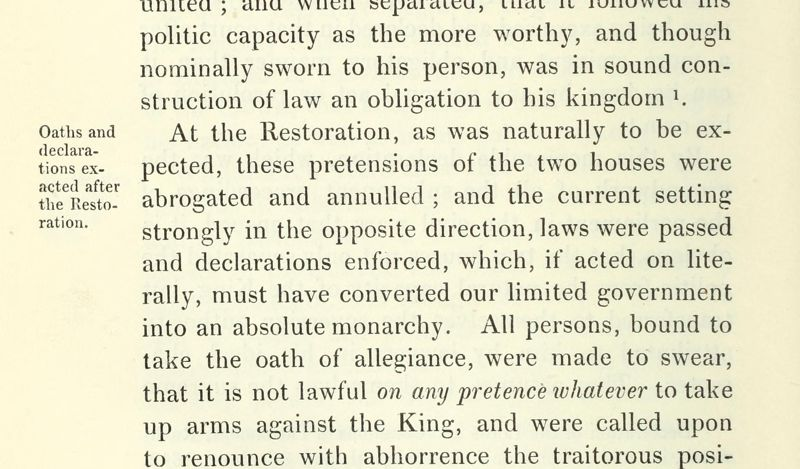
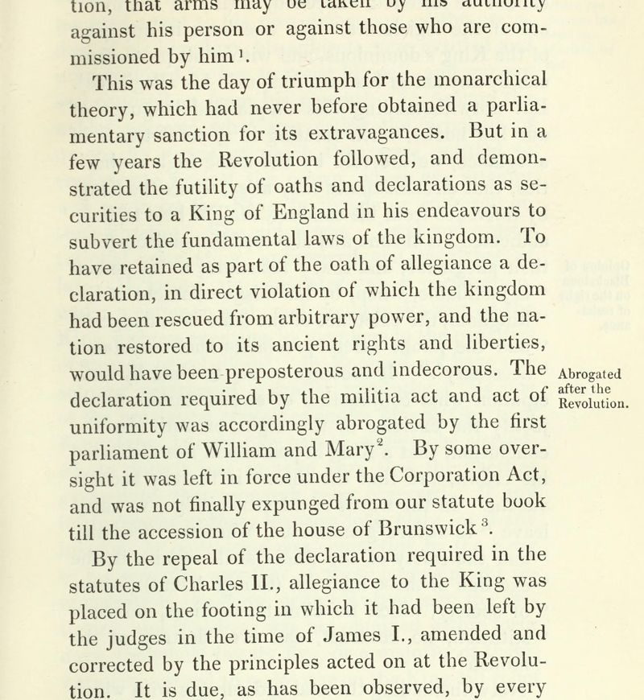

“Not lawful on any pretence whatever” (pp. 84–85)
English: 1849, chapter on allegiance, pp. 84–85, scan n183–n184. Side-notes: “Oaths and declarations exacted after the Restoration”; “Abrogated after the Revolution”. Highlighted: what Lecky’s note reports, and what it leaves out.


At the Restoration, as was naturally to be expected, these pretensions of the two houses were abrogated and annulled; and the current setting strongly in the opposite direction, laws were passed and declarations enforced, which, if acted on literally, must have converted our limited government into an absolute monarchy. All persons, bound to take the oath of allegiance, were made to swear, that it is not lawful on any pretence whatever to take up arms against the King, and were called upon to renounce with abhorrence the traitorous position, that arms may be taken by his authority against his person or against those who are commissioned by him.
This was the day of triumph for the monarchical theory, which had never before obtained a parliamentary sanction for its extravagances. But in a few years the Revolution followed, and demonstrated the futility of oaths and declarations as securities to a King of England in his endeavours to subvert the fundamental laws of the kingdom. To have retained as part of the oath of allegiance a declaration, in direct violation of which the kingdom had been rescued from arbitrary power, and the nation restored to its ancient rights and liberties, would have been preposterous and indecorous. The declaration required by the militia act and act of uniformity was accordingly abrogated by the first parliament of William and Mary. By some oversight it was left in force under the Corporation Act, and was not finally expunged from our statute book till the accession of the house of Brunswick.
Allen’s footnotes: the declarations were required by the Corporation Act, 13 Ca. II. st. 2. c. 1. § 5, 12; the Militia Act, 13 and 14 Ca. II. c. 2. § 18, 19; and the Act of Uniformity, 13 and 14 Ca. II. c. 4. § 9; abrogated by 1 W. & M. Sess. 1. c. 8. § 11; finally repealed by 5 Geo. I. c. 6. § 2.
Lecky (vol. II, ch. V, note 90): “This clause was expunged at the Revolution (Allen’s Hist. of Royal Prerogative in England, p. 89).” True of two of the three statutes; Allen’s own page says the third kept it until the reign of George I.
Further down the rabbit hole
Sources that Lecky cites in the notes next to the ones that cite this page.
- Hallam, Literature of Europe and Constitutional HistoryHow Lecky quotes Hallam on persecution
- Hooker, Of the Laws of Ecclesiastical PolityLaws without consent are “no better than mere tyranny”, and what Hooker meant by consent
- Elrington, Life of UssherTwelve Irish bishops declare toleration “a grievous sin” (1626)
- An Homily against Disobedience and Wilful RebellionHell as the prison of rebels: the Church of England preaches obedience
- Macaulay, History of England and EssaysMacaulay on Puritans, bear-baiting and the servile Church
- Aquinas, Summa theologiae, II-IIHeretics and forgers; the usurper’s subjects


Backlinks
Every place in Rationalism in Europe that links to this page (generated automatically when the site is built).
- Chapter V: note 90